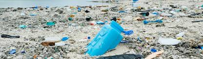
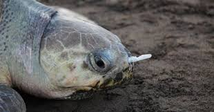

- Trash can hurt animals who live in the ocean or on land.
- Unrecycled trash can cause air pollution.
- If put in the wrong bin, items that could have been recycled will make landfills bigger.
- Sea animals might think floating, unrecycled trash are food.
- Animals in sea have been found with trash inside their guts.

